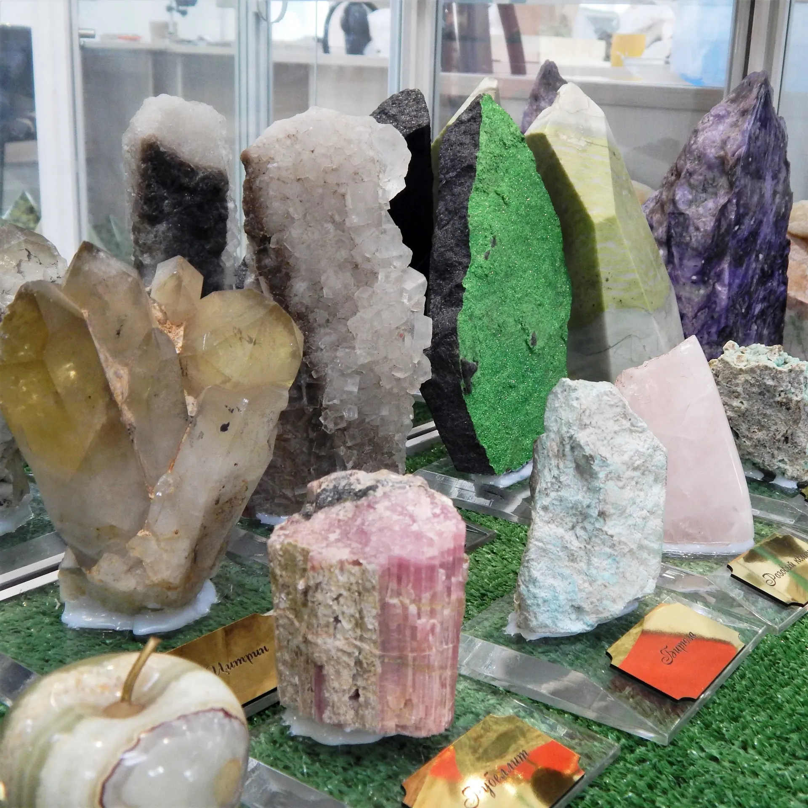
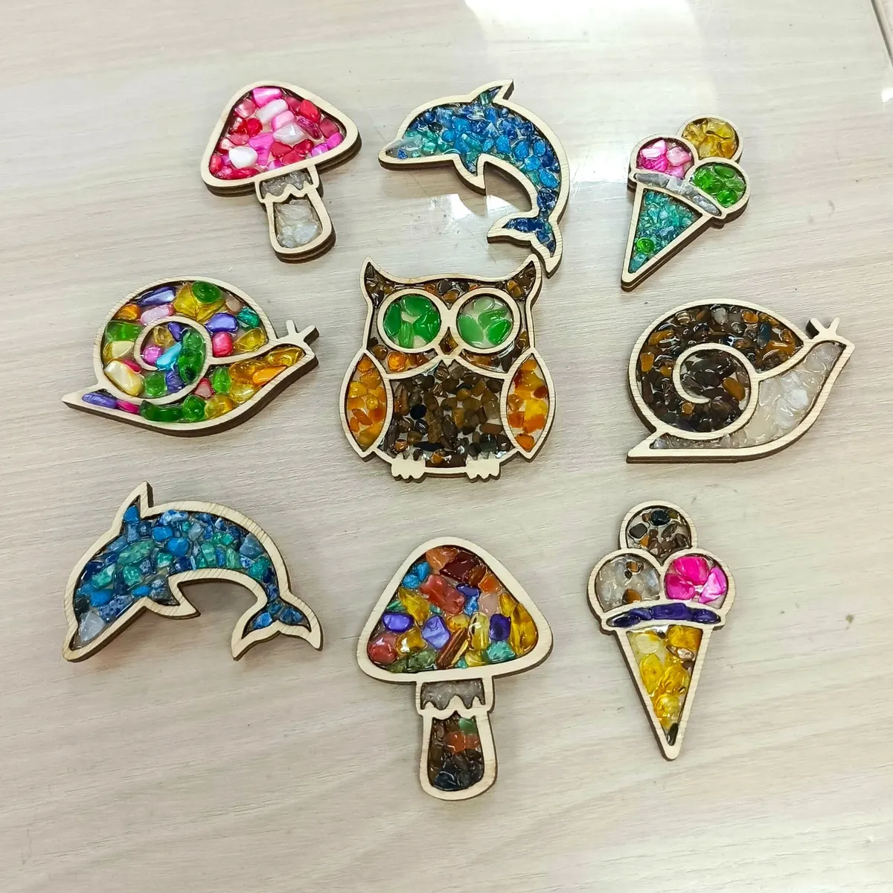
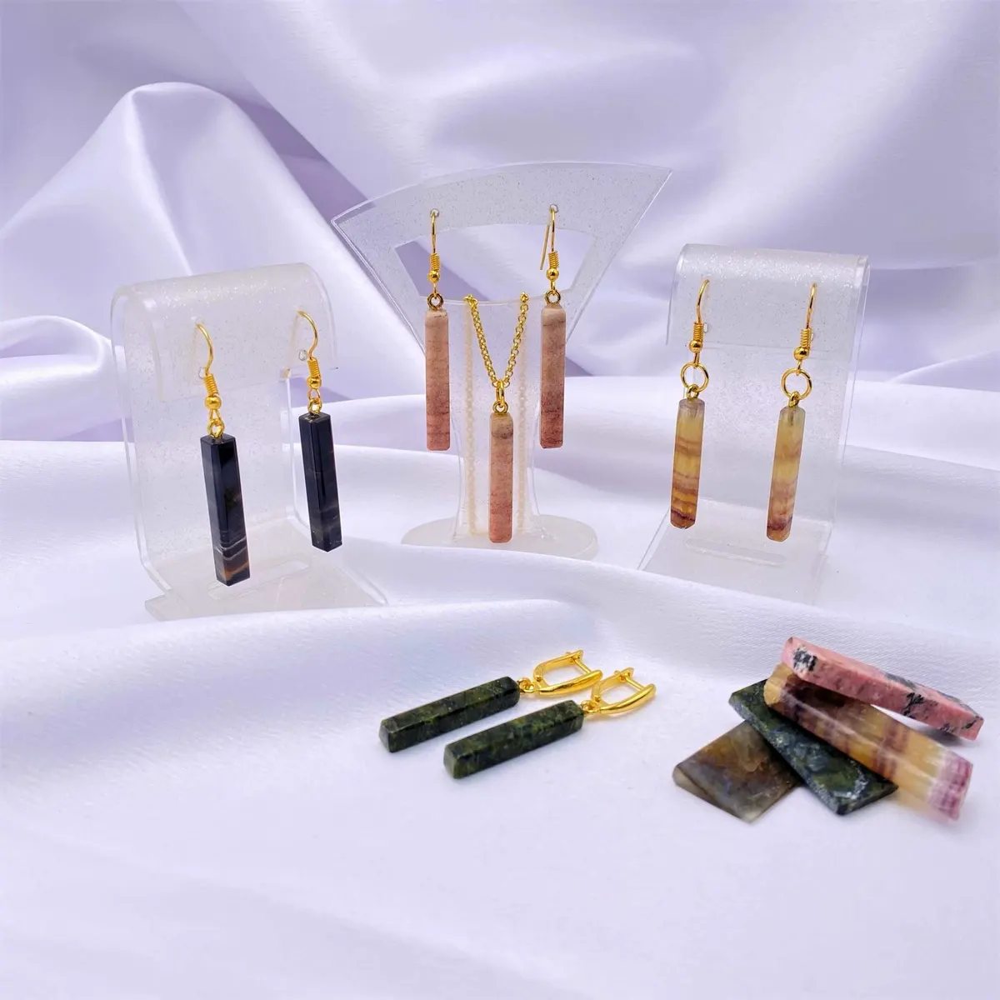
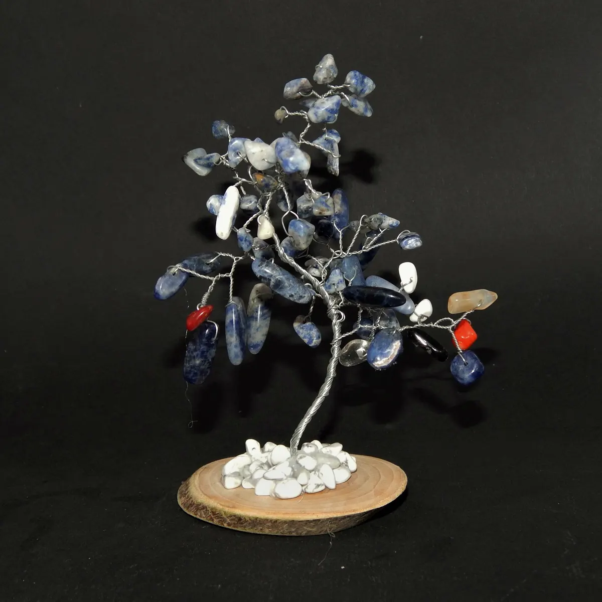

Камнерезная мастерская StoneLab · Ижевск
Экскурсии и мастер-классы по камнерезному делу в Ижевске
Расскажем о самоцветах, дадим распилить камень и сделать украшение своими руками. Для детей и взрослых.
- Экскурсия с мастер-классом от 750 ₽
- Для детей и взрослых
- 4,9 на Яндекс.Картах

Экскурсии, мастер-классы и поездки
Цены с карточки мастерской на Яндекс.Картах.
Экскурсии
- Экскурсия и мастер-класс1 час: рассказ о самоцветах и свойствах, сувенир своими руками750 ₽
- Экскурсия «Нескучно о камнях»1 академический час: кристаллы под микроскопом, камнерезное оборудование350 ₽
- Интерактивный тур по 7 континентам90 минут, урок географии для 4-7 классов700 ₽
Мастер-классы
- Пробное занятие по обработке камня2 часа: выбор изделия, резка, шлифовка и полировка800 ₽
- Мозаика1 час, своя форма из камня750 ₽
- Браслет из натуральных камней2 часа2 100 ₽
- Серьги-грозди2 часа, необработанный камень2 800 ₽
- Чокер2 часа, бусины из натуральных камней3 200 ₽
- Колье на жёсткой основе3 часа3 100 ₽
- Серьги-трансформеры3 часа2 800 ₽
- Серьги-капельки2-3 часа, камень на выбор3 500 ₽
- Комплект украшений3 часа: камень, форма, макет, изготовление3 800 ₽
- Дерево жизниталисман из самоцветов2 200 ₽
- Подсвечник «Очаг»1-1,5 часа, из натурального камня1 900 ₽
- Арт-практика «Дерево исполнения желаний»4 часа, нейрографика и самоцветы4 700 ₽
Праздники
- Новогодний квест «В гостях у Хозяйки медной горы»2 академических часа1 800 ₽
- Мастер-класс на корпоративдо 120 человек, по договорённостиуточнить
Экспедиции
- Экспедиция за самоцветамипалатки, тушёнка и много копать22 000 ₽
- Окаменелости Урала4 дня, поисково-познавательная экспедиция25 000 ₽
- Сокровища Кавказа4 дня, горы, пещеры, термальный источник45 000 ₽
Цены обновлены 28 сентября и взяты с карточки на Яндекс.Картах.
Как проходит занятие
- 01
Запись
Выбираете экскурсию или мастер-класс, пишете день и время.
- 02
Экскурсия по мастерской
Рассказ о названиях, легендах и свойствах самоцветов.
- 03
Работа с камнем
Можно распилить камень и почувствовать себя Данилой-мастером.
- 04
Украшение домой
Кулон, серьги, браслет или другое изделие своими руками.



Что пишут гости
Для детей и взрослых
Мастер-классы и занятия подходят всей семье.
Классные и школьные мероприятия
Новогоднее мероприятие всем классом, дети остались довольны.
Поездки за минералами
Летом организуют выезды за минералами.
Отзывы с Яндекс.Карт
«Нам провели экскурсию по названиям, легендам и истории возникновения самоцветов. Дали распилить камень, чтоб почувствовать себя Данилой-мастером)) В оконцовочке провели мастеркласс, и мой ребенок ушел довольный собой, сделав себе кулон из змеевика.»
Татьяна Шереметинская · 2 июля 2025
«От всей души благодарю Виталия и его команду за проведенное новогоднее мероприятие. Ходили всем классом, дети очень довольны.»
Татьяна С. · 21 декабря 2024
«Отличный музей минералов, интересные мастер-классы и занятия как для детей, так и для взрослых. Летом организуют шикарные поездки за минералами.»
Екатерина К. · 21 января
Отзывы с карточки на Яндекс.Картах.
Частые вопросы
С чего начать?
С экскурсии и мастер-класса на 1 час за 750 ₽ или с пробного занятия по обработке камня на 2 часа.
Подходит ли для детей?
Да, занятия и мастер-классы проходят для детей и взрослых.
Можно ли заказать мастер-класс для компании?
Да, мастер-классы проводят на корпоративах до 120 человек, стоимость по договорённости.
Где находится мастерская?
Ижевск, ул. Карла Маркса, 191, этаж -1. Ежедневно 10:00-20:00.
Запишитесь на экскурсию или мастер-класс
- Адрес
- ул. Карла Маркса, 191, этаж -1, Ижевск
- Часы
- ежедневно 10:00-20:00
- Телефон
- +7 (965) 851-88-89